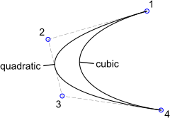
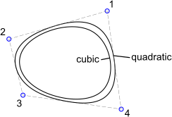

- Seleccione el grado de la lengüeta en la barra de herramientas de
opciones. Los grados soportados son 2 (b-spline cuadrático) y 3 (b-spline
cúbico). Cuanto mayor sea el grado, más suave será la curva.
Tenga en cuenta que una b-spline cuadrática requiere por definición
al menos 3 puntos de control, mientras que una b-spline cúbica tiene al
menos 4 puntos de control.
- Marque la casilla de verificación'Cerrado' en la barra de herramientas
de opciones si desea crear una spline cerrada. Las ranuras cerradas son
bucles cerrados continuos.
- Especifique los puntos de control. Después de definir el tercer punto
de control (para acanaladuras cuadráticas) o cuarto (para acanaladuras
cúbicas), se mostrará una vista previa. Puede eliminar el último punto de
control de nuevo haciendo clic en el botón"Deshacer" en la barra de
herramientas de opciones.
- Presione escape o haga clic con el botón derecho del ratón después de
fijar el último punto para confirmar la forma de la lengüeta.
- Puede crear otra spline o hacer clic con el botón derecho del ratón
para terminar la herramienta.
Ejemplo para dos estrías abiertas (cuadrática y cúbica):

Ejemplo para dos splines periódicos cerrados (cuadráticos y cúbicos)
